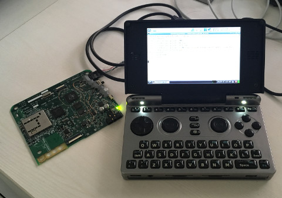

Steward
分享是一種喜悅、更是一種幸福
微電腦 - Zipit Z1 - Upload程式(Python)
#!/usr/bin/python
import os
import sys
import serial
import readchar
import argparse
import threading
from time import sleep
def print_serial():
while True:
sys.stdout.write(ser.read())
def send_file(path, ch):
f = open(path, 'rb')
c = f.read()
f.close()
n = len(c)
buf = [(n % 65536) % 256, (n % 65536) / 256, (n / 65536) % 256, (n / 65536) / 256]
ser.write(ch)
ser.write(buf)
sleep(1)
ser.write(c)
sleep(1)
parser = argparse.ArgumentParser()
parser.add_argument('-port', default='/dev/ttyUSB0')
args = parser.parse_args()
if os.geteuid() != 0:
print "run me as root"
sys.exit()
if os.path.exists('zpm.bin') == False:
print 'failed to open zpm.bin'
sys.exit()
print """Upload commands
'A' - allrom.bin upload (2MB)
'a' - loader.bin upload (8K max)
'k' - zimage.dat upload (581K max)
'u' - ramdisk.gz upload (1.5MB max) Follow changes with 'WYes' to write
'?' - show zipit information
Other commands
'R' - grab ROM
'x' - exit\n"""
f = open('zpm.bin', 'rb')
zpm = f.read()
f.close()
ser = serial.Serial(args.port, 9600)
for x in range(2048):
ser.write(zpm[x])
ser.close()
ser = serial.Serial(args.port, 57600)
thread = threading.Thread(target=print_serial)
thread.daemon = True
thread.start()
while True:
ch = readchar.readchar()
if ch == 'A':
print 'send allrom.bin...'
send_file('allrom.bin', ch)
elif ch == 'a':
print 'send loader.bin...'
send_file('loader.bin', ch)
elif ch == 'k':
print 'send zimage.dat...'
send_file('zimage.dat', ch)
elif ch == 'u':
print 'send ramdisk.gz...'
send_file('ramdisk.gz', ch)
elif ch == 'x':
break
else:
ser.write(ch)
ser.close()
操作指令跟原本Upload程式一樣
$ sudo ./run.py
Upload commands
'A' - allrom.bin upload (2MB)
'a' - loader.bin upload (8K max)
'k' - zimage.dat upload (581K max)
'u' - ramdisk.gz upload (1.5MB max) Follow changes with 'WYes' to write
'?' - show zipit information
Other commands
'R' - grab ROM
'x' - exit
ZPM .02 - 57.6Kbps new cmds
Loader addresses: 00002000 00090000
OK >
send loader.bin...
BEG:00000D30END:E6OK >
send zimage.dat...
BEG:00084DE8END:76OK >
send ramdisk.gz...
BEG:0013720CEND:B3OK >
E+W PWD?ERASING,ERASED,WRITTEN!
OK >
司徒終於可以在Pandora掌機上開發Zipit Z1的程式了！
